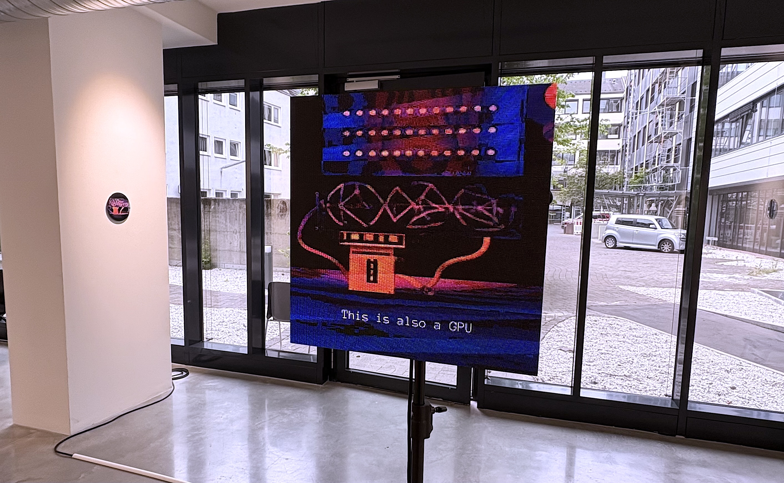

This writing foregrounds generative artificial intelligence as simultaneously a computational phenomenon and a material reality, tracing the entangled nature of algorithmic processes and the physical infrastructures that make them possible. Through a cybernetic approach, I reflect on how artists can engage critically with image-generating systems like Stable Diffusion while acknowledging their underlying technical and geopolitical dynamics.
The research begins with the artistic explorations of AI-generated images, including the discovery of persistent purple artifacts in feedback loops that revealed inherent biases in the system. By methodically dissecting the technical mechanisms of the diffusion model, from CLIP embeddings to U-Net architectures, I examine how meaning is translated into mathematical spaces and how statistical patterns replace traditional notions of indexicality in image-making. This technical exploration exposes how machines process visual information through convolutions and attention mechanisms, optimizing for statistical patterns that inevitably reproduce biases present in data.
Crucially, the thesis shifts from algorithmic concerns to the material conditions of AI, tracing the global supply chain from quartz extraction in North Carolina to semiconductor fabrication in Taiwan. This material investigation reveals how Taiwan's geopolitical position as a producer of nearly 100% of advanced chips creates what has been termed a Silicon Shield, an unstable form of sovereignty tied to technological necessity. As a Taiwanese artist, I confront how my identity intersects with these infrastructures, asking how Taiwan's semiconductor industry protects the island while accelerating systems that may ultimately undermine sovereignty elsewhere.
Through this writing, I position my practice within a growing movement of critical AI and am concerned with the infrastructural aesthetics of computation. The writing concludes that meaningful artistic engagement with AI requires attention to both surface and substrate, not only to what these systems generate but also to how they are made, maintained, and embedded in global power structures.
All code and technical implementations discussed in this project are available at: https://github.com/aprilcoffee/heat_as_image